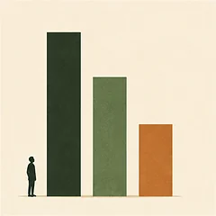
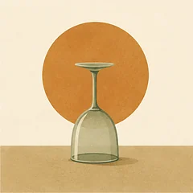
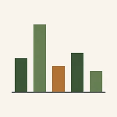

Главная → Тесты
Психологические тесты
Бесплатно · без регистрации · ответы не покидают браузер
Здесь собраны опросники, которыми пользуются врачи и исследователи, — без развлекательных «узнай свой психотип». Каждый тест — валидированная шкала в общепринятом виде, с честной расшифровкой и указанием источника. Результат считается прямо в браузере: мы не получаем и не храним ваши ответы.

 Тест на тревожность
Шкала GAD-7, 7 вопросов. Насколько сильной была тревога за последние две недели и есть ли повод к специалисту.
Пройти · 2 минуты
Тест на тревожность
Шкала GAD-7, 7 вопросов. Насколько сильной была тревога за последние две недели и есть ли повод к специалисту.
Пройти · 2 минуты
 Тест на депрессию
Шкала PHQ-9, 9 вопросов. Самый распространённый в мире скрининг депрессии с расшифровкой по пяти уровням.
Пройти · 2 минуты
Тест на депрессию
Шкала PHQ-9, 9 вопросов. Самый распространённый в мире скрининг депрессии с расшифровкой по пяти уровням.
Пройти · 2 минуты
 Тест на выгорание
Копенгагенская шкала CBI, 6 вопросов. Степень физического и эмоционального истощения — не только у наёмных сотрудников.
Пройти · 2 минуты
Тест на выгорание
Копенгагенская шкала CBI, 6 вопросов. Степень физического и эмоционального истощения — не только у наёмных сотрудников.
Пройти · 2 минуты
 Тест на стресс
Шкала PSS-10, 10 вопросов. Насколько неподконтрольной и перегруженной ощущается жизнь за последний месяц.
Пройти · 3 минуты
Тест на стресс
Шкала PSS-10, 10 вопросов. Насколько неподконтрольной и перегруженной ощущается жизнь за последний месяц.
Пройти · 3 минуты
 Тест на самооценку
Шкала Розенберга, 10 утверждений. Классический инструмент измерения самоуважения, стандарт с 1965 года.
Пройти · 3 минуты
Тест на самооценку
Шкала Розенберга, 10 утверждений. Классический инструмент измерения самоуважения, стандарт с 1965 года.
Пройти · 3 минуты

Что со мной: три состояния сразу Шкала DASS-21, 21 вопрос. Разделяет депрессию, тревогу и стресс: внешне они похожи, а делать при них нужно разное. Пройти · 4 минуты Тест на постоянное беспокойство Шкала PSWQ, 16 утверждений. Измеряет не силу тревоги, а привычку прокручивать то, что ещё не случилось. Пройти · 3 минуты Тест на детские травмы Шкала ACE, 10 вопросов. Сколько видов трудного детского опыта было до 18 лет — и почему это не приговор. Пройти · 3 минуты
Тест на употребление алкоголя Шкала AUDIT Всемирной организации здравоохранения, 10 вопросов. Где проходит граница между привычкой и риском. Пройти · 3 минуты
Тест на тип личности Большая пятёрка, 20 утверждений. Пять шкал вместо ярлыка из четырёх букв — научная модель личности, а не типология из соцсетей. Пройти · 4 минутыС какого теста начать
Если непонятно, что именно происходит, начните с того, что беспокоит сильнее всего. Тесты не исключают друг друга: состояния часто идут вместе, и два-три результата дают более честную картину, чем один.
| Что вы замечаете у себя | С чего начать |
|---|---|
| Постоянное напряжение, не отпускает тревога | GAD-7 — тревожность за две недели |
| Мысли крутятся по кругу, трудно остановить обдумывание | PSWQ — склонность к беспокойству как черта |
| Нет сил, ничего не радует, тяжесть неделями | PHQ-9 — скрининг депрессии |
| Опустошение именно от работы, отдых не восстанавливает | CBI — выгорание |
| Ощущение, что не справляетесь с объёмом и не контролируете | PSS-10 — воспринимаемый стресс |
| Резкая самокритика, ощущение, что вы хуже других | Шкала Розенберга — самоуважение |
| Одни и те же сценарии в отношениях, корни уходят в детство | ACE — неблагоприятный детский опыт |
| Алкоголь стал способом снять напряжение | AUDIT — шкала ВОЗ |
| Хочется понять себя, а не измерить состояние | Большая пятёрка — черты личности |
| Плохо, но непонятно, что именно | DASS-21 — три шкалы за один проход |
Отдельно про повторные замеры. Одно прохождение показывает состояние на сегодня и сильно зависит от того, какой был день. Гораздо полезнее пройти тест ещё раз через три-четыре недели и сравнить: направление движения говорит больше, чем сама цифра. Именно так шкалы и используют в работе — как способ увидеть динамику, а не как приговор в баллах.
Как читать результаты
Все тесты на этой странице — скрининги, а не диагностика. Скрининг отвечает на один вопрос: «есть ли здесь то, с чем стоит разбираться дальше». Он не называет диагноз, не различает похожие состояния и не учитывает вашу историю. Диагноз ставит человек — врач или клинический психолог — после разговора.
Отсюда два практических следствия. Высокий балл не означает, что у вас болезнь: он означает, что имеет смысл дойти до специалиста. Низкий балл не отменяет ваших переживаний: если вам тяжело, а тест показал «норму», ориентируйтесь на свою жизнь, а не на цифру — любая шкала спрашивает про ограниченный набор симптомов и легко проходит мимо остального.
Почему именно эти шкалы
Мы намеренно не публикуем популярные методики, которые распространяются по платной лицензии, — MBTI, тест Люшера, опросник выгорания MBI, шкалы Бека и Гамильтона. Их пункты защищены, и выкладывать их в открытый доступ некорректно. Вместо MBI, например, мы используем Копенгагенскую шкалу CBI: она создавалась как свободная альтернатива и проверена в исследованиях.
Каждая страница указывает первоисточник — оригинальную публикацию, в которой шкала была представлена и валидирована. Формулировки и границы диапазонов мы не меняем: если инструмент подстроить «под себя», он перестаёт быть инструментом.
Прошли тест и не знаете, что делать с результатом? Расскажите, что происходит, — анонимно, без регистрации и в любое время суток.
Что почитать по теме
К каждому состоянию у нас есть подробный разбор: что это, почему возникает, что делать сейчас и когда идти к врачу. Начать удобно с полного гида по тревоге или сразу открыть каталог статей.
Частые вопросы
Насколько точны психологические тесты онлайн?
Точность зависит от того, что за шкала. Опросники на этой странице — валидированные инструменты, проверенные на больших выборках, и они хорошо отделяют норму от состояния, требующего внимания. Но любой тест основан на самоотчёте и отражает то, как вы себя ощущаете сегодня. Поэтому результат — повод разобраться дальше, а не вывод о вашем здоровье.
Можно ли по тесту поставить себе диагноз?
Нет. Все тесты здесь — скрининги: они отвечают на вопрос «есть ли повод разбираться», но не различают похожие состояния и не учитывают вашу историю, соматические причины и длительность симптомов. Диагноз ставит врач или клинический психолог после разговора, и никакой опросник его не заменяет.
Сохраняются ли мои ответы?
Нет. Результат считается прямо в браузере: ответы не отправляются на сервер, не связываются с вами и нигде не хранятся. Регистрация не нужна, имя и почту мы не спрашиваем. Закройте вкладку — и от прохождения не останется следа.
Почему у вас нет теста MBTI, теста Люшера и шкалы Бека?
Эти методики распространяются по платной лицензии, и публиковать их пункты в открытом доступе некорректно. Мы берём только свободно используемые шкалы. Там, где есть достойная свободная альтернатива, используем её: вместо лицензионного опросника выгорания MBI — Копенгагенскую шкалу CBI, проверенную в исследованиях.
Как часто можно проходить тест повторно?
Разумный интервал — три-четыре недели. Шкалы спрашивают о состоянии за последние одну-четыре недели, поэтому более частые замеры покажут не изменение состояния, а колебания настроения. Сравнение двух результатов с интервалом в месяц полезнее, чем десяток прохождений подряд.
Материалы подготовлены командой AI Therapist. Мы приводим шкалы в общепринятом виде, без изменения формулировок и границ диапазонов, и указываем первоисточник на каждой странице. Раздел носит просветительский характер, не является диагностическим заключением и не заменяет консультацию врача или клинического психолога.
Кто отвечает за содержание сайта и по каким правилам мы готовим материалы — на странице о проекте.